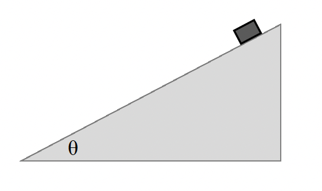

שאלה 2

qimage-1.png
באחד הניסויים שנערכו בשיעור הפיזיקה התבקשו התלמידים למדוד את תאוצתו של גוף הנע במורד מדרון, בעל זווית נטייה θ כמתואר בתרשים.
זווית הנטייה θ קבועה לאורך כל השאלה.
התלמידים חזרו על המדידה מספר פעמים, כאשר בכל מדידה הם שינו את מקדם החיכוך בין הגוף והמדרון.
הזניחו את התנגדות האוויר והניחו כי מקדם החיכוך הקינטי שווה למקדם החיכוך הסטטי בין הגוף והמדרון.
לפניכם תוצאות המדידות שהתקבלו על ידי התלמידים :
| μ | 0.10 | 0.15 | 0.20 | 0.25 | 0.30 |
| a (m/s2) |
2.5 | 2.0 | 1.6 | 1.1 | 0.6 |
א.
בטאו, באמצעות g ו-θ בלבד, את תאוצת הגוף a כתלות במקדם החיכוך μ. פרטו את השלבים בפיתוח הביטוי והיעזרו בתרשים כוחות. (6 נק')
ב.
(1)
בעזרת טבלת הערכים הנתונה שרטטו גרף פיזור המתאר את תאוצת הגוף a כתלות במקדם החיכוך μ. (6 נק')
(2)
הוסיפו לגרף הפיזור קו מגמה בהתאם לקשר אותו פיתחתם בסעיף א'. המשיכו את קו המגמה כך שיחתוך את הצירים של הגרף. (3.33 נק')
ג.
התבקשתם בסעיף ב' לשרטט קו מגמה ולהמשיכו כך שיחתוך את צירי הגרף. נגדיר את נקודה A כנקודת החיתוך של הגרף עם הציר האנכי, ואת הנקודה B כנקודת החיתוך של הגרף עם הציר האופקי. הסבירו מהי המשמעות הפיזיקלית של הנקודות A ו-B בגרף. (4 נק')
ד.
(1)
חשבו את שיפוע הגרף. (4 נק')
(2)
חשבו את זווית הנטייה של המדרון θ לאורכו נע הגוף. (5 נק')
ה.
הגוף (שמסתו m = 1kg) משוחרר ממנוחה מראש המדרון. נתון כי אורך המדרון הוא L = 2m, ומקדם החיכוך הוא μ = 0.20. מה תהיה מהירות הגוף כאשר הוא יגיע לתחתית המדרון?